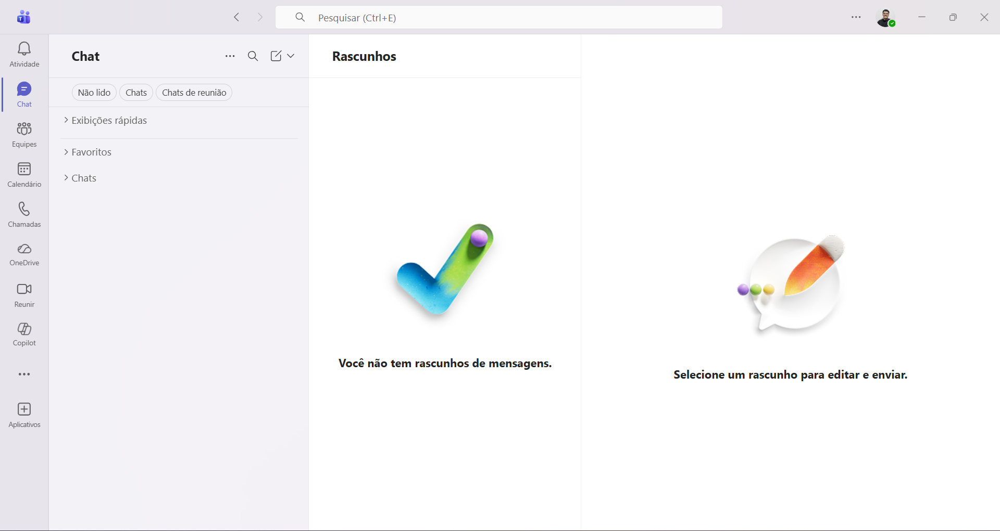
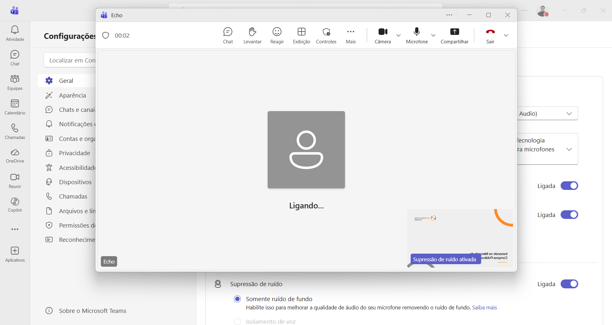
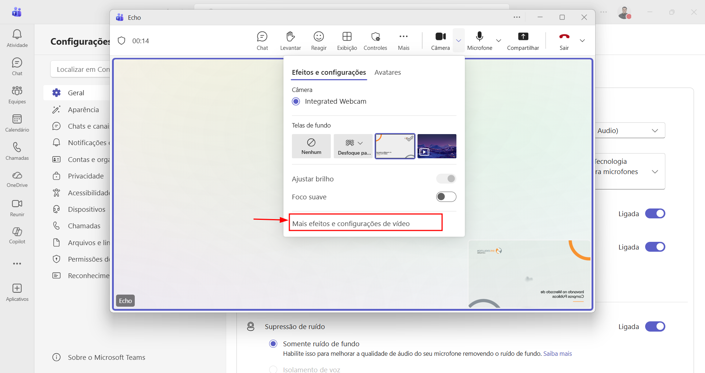
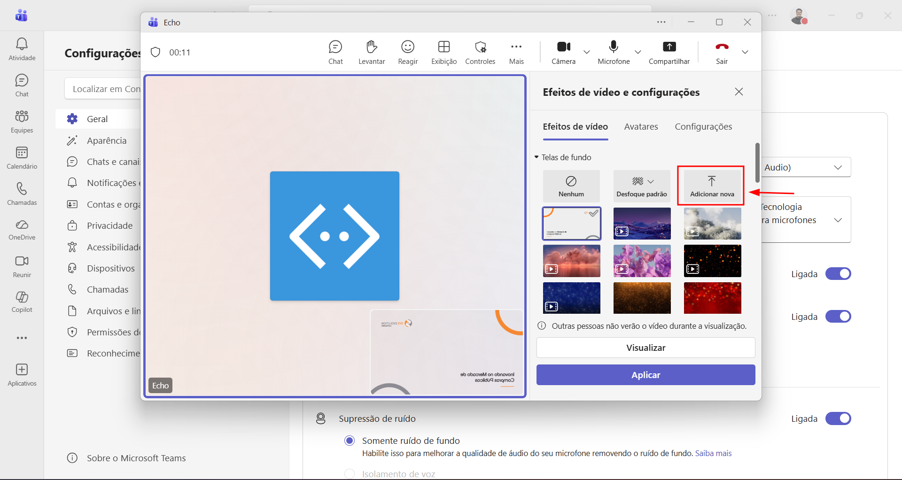
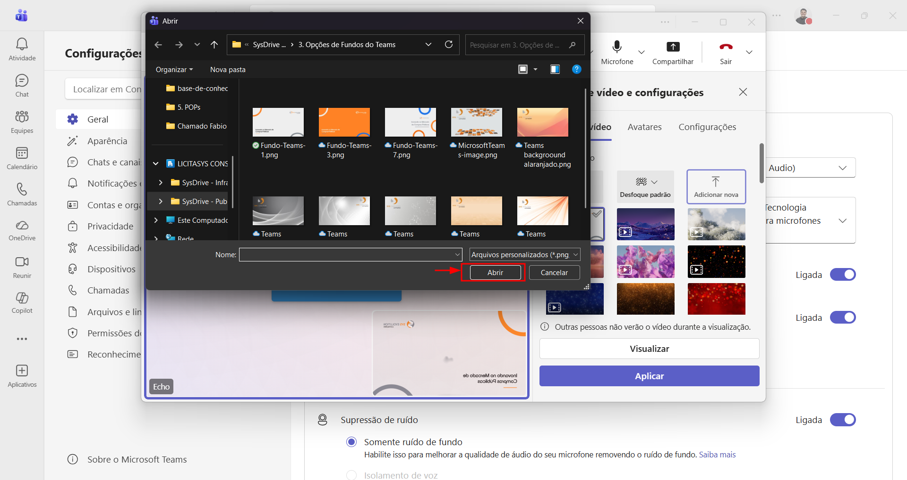
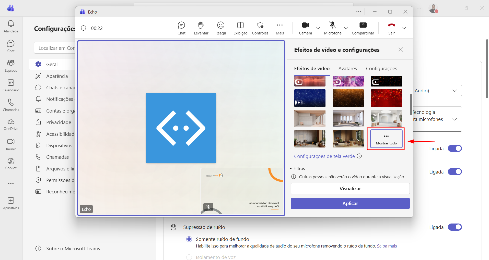
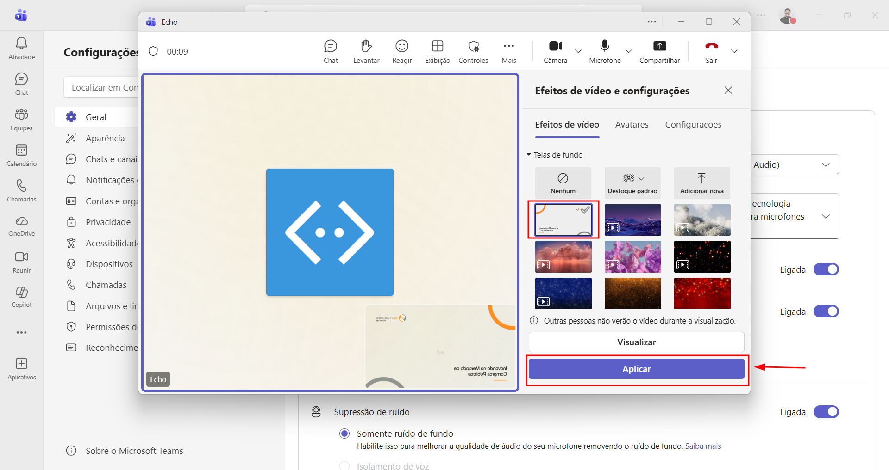

Como inserir o plano de fundo
no Teams
Personalize sua câmera nas reuniões com o fundo corporativo da Sys.
Este guia detalha os passos para adicionar um plano de fundo personalizado nas reuniões do Microsoft Teams. A Sys disponibiliza modelos prontos de fundo corporativo na pasta compartilhada, garantindo uma apresentação visual padronizada em todas as videochamadas.
Iniciar uma chamada no Teams
Abra o Microsoft Teams e inicie ou entre em uma chamada de vídeo. Você pode pedir a um colega para ligar para você ou criar uma reunião de teste.

Acessar as configurações de vídeo
Na tela da reunião, clique sobre a seta ao lado do ícone da Câmera. No menu que aparecer, selecione "Mais efeitos e configurações de vídeo".


Adicionar um novo fundo
Na tela de Efeitos de vídeo, clique em "Adicionar Nova" para importar uma imagem personalizada.

Selecionar o fundo corporativo
Navegue até a pasta compartilhada com os modelos de fundo corporativo e selecione um dos modelos disponíveis. Clique em "Abrir".

Visualizar todos os fundos
De volta ao Teams, clique em "Mostrar tudo" para exibir todos os planos de fundo disponíveis, incluindo o que você acabou de adicionar.

Aplicar o plano de fundo
Localize a imagem que foi adicionada, clique sobre ela para selecioná-la e depois clique em "Aplicar".

Pronto!
O plano de fundo corporativo foi adicionado ao Teams. Ele será utilizado automaticamente nas próximas chamadas de vídeo.
📋 Observações
Em caso de dúvidas ou problemas durante o processo, entre em contato
com a equipe de Service Desk nos canais:


Também estamos disponíveis no Microsoft Teams.